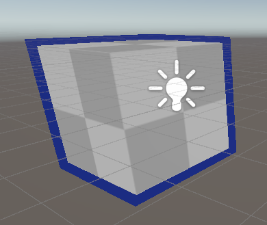

Unity_Stencil
Unity 模板测试
模板测试在Opengl里已经了解很多了，这里主要写Unity ShaderLab中的一些问题。简单实现下模板测试原理的轮廓效果，如下。

其中一些问题
-
URP里多Pass，需要在Pass里面标记Tags才能正常渲染
Tags{"LightMode"="*******"}
具体枚举在URP包里的 Runtime/Passes 里的 DrawObjectsPass.cs脚本，有如下代码
public DrawObjectsPass(string profilerTag, bool opaque, RenderPassEvent evt, RenderQueueRange renderQueueRange, LayerMask layerMask, StencilState stencilState, int stencilReference): this(profilerTag,new ShaderTagId[] {
new ShaderTagId("SRPDefaultUnlit"),
new ShaderTagId("UniversalForward"),
new ShaderTagId("UniversalForwardOnly"),
new ShaderTagId("LightweightForward")},
opaque, evt, renderQueueRange, layerMask, stencilState, stencilReference)
以及对于URP的多Pass的执行顺序并不是更加Pass在代码中的顺序，而是跟随上述代码中的枚举顺序。
如下
1 | Shader "Unlit/NewUnlitShader2" |
执行顺序为 self的渲染自身pass，然后渲染轮廓的outline pass
Stencil
Stencil
{
Ref <ref>
ReadMask <readMask>
WriteMask <writeMask>
Comp <comparisonOperation>
Pass <passOperation>
Fail <failOperation>
ZFail <zFailOperation>
CompBack <comparisonOperationBack>
PassBack <passOperationBack>
FailBack <failOperationBack>
ZFailBack <zFailOperationBack>
CompFront <comparisonOperationFront>
PassFront <passOperationFront>
FailFront <failOperationFront>
ZFailFront <zFailOperationFront>
}
以上为shaderlab中的模板测试属性，ref为标准值，comp为比较方法，pass、fail、zfail为模板缓冲数据与标准值对比后的相应结果的操作，一般使用时如下
Stencil
{
Ref [_refVal]
Comp
Pass
}本博客所有文章除特别声明外，均采用 CC BY-NC-SA 4.0 许可协议。转载请注明来自 Hexo！